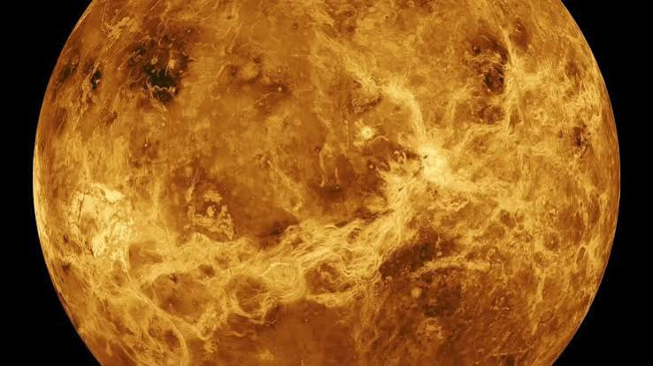
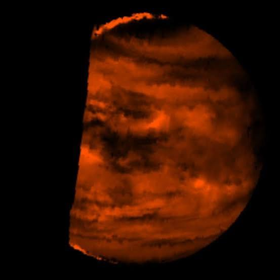

Venus is the second planet from the Sun, and Earth's closest planetary neighbor. Venus is the third brightest object in the sky after the Sun and Moon. Venus spins slowly in the opposite direction from most planets. Venus is similar in structure and size to Earth, and is sometimes called Earth's evil twin. Its thick atmosphere traps heat in a runaway greenhouse effect, making it the hottest planet in our solar system with surface temperatures hot enough to melt lead — about 872 degrees Fahrenheit (467 Celsius). And the atmospheric pressure at the surface is about 93 times what it is at sea level on Earth. Below Venus' dense, persistent clouds, the surface has volcanoes and deformed mountains.


Venus orbits the Sun from an average distance of 67 million miles (108 million kilometers), or 0.72 astronomical units (1 astronomical unit, abbreviated AU, is the distance from the Sun to Earth). Sunlight takes about six minutes to travel from the Sun to Venus, compared to about eight minutes for the Sun and Earth. Earth's nearness to Venus is a matter of perspective. The planet is nearly as big around as Earth. Its diameter at its equator is about 7,521 miles (12,104 kilometers), versus 7,926 miles (12,756 kilometers) for Earth. From Earth, Venus is the brightest object in the night sky after our own Moon. The ancients, therefore, gave it great importance in their cultures, even thinking it was two objects: a morning star and an evening star. That’s where the trick of perspective comes in. Because Venus’ orbit is closer to the Sun than ours, the two of them — from our viewpoint — never stray far from each other. The ancient Egyptians and Greeks saw Venus in two guises: first in one orbital position (seen in the morning), then another (your “evening” Venus), just at different times of the year. At its nearest to Earth, Venus is about 24 million miles away (about 38 million kilometers). But most of the time the two planets are farther apart. The maximum distance between Venus and Earth is about 162 million miles (261 million kilometers). Mercury, the innermost planet, actually spends more time in Earth’s proximity than Venus.
Spending a day on Venus would be quite a disorienting experience — that is, if your spacecraft or spacesuit could protect you from the extreme heat and crushing air pressure. For one thing, your “day” would be 243 Earth days long — longer even than a Venus year (one trip around the Sun), which takes only 225 Earth days. For another, because of the planet's extremely slow rotation, sunrise to sunset would take 117 Earth days. And by the way, the Sun would rise in the west and set in the east, because Venus spins backward compared to Earth. While you’re waiting, don’t expect any seasonal relief from the unrelenting temperatures. On Earth, with its spin axis tilted by about 23 degrees, we experience summer when our part of the planet (our hemisphere) receives the Sun’s rays more directly — a result of that tilt. In winter, the tilt means the rays are less direct. No such luck on Venus: Its very slight tilt is only three degrees, which is too little to produce noticeable seasons.
The close similarities of early Venus and Earth, and their very different fates, provide a kind of test case for scientists who study planet formation. Similar size, similar interior structure, both harboring oceans in their younger days. Yet one is now an inferno, while the other is the only known world to host abundant life. The factors that set these planets on almost opposite paths began, most likely, in the swirling disk of gas and dust from which they were born. Somehow, 4.6 billion years ago that disk around our Sun accreted, cooled, and settled into the planets we know today. Better knowledge of the formation history of Venus could help us better understand Earth — and rocky planets around other stars.
If we could slice Venus and Earth in half, pole to pole, and place them side by side, they would look remarkably similar. Each planet has an iron core enveloped by a hot-rock mantle; the thinnest of skins forms a rocky, exterior crust. On both planets, this thin skin changes form and sometimes erupts into volcanoes in response to the ebb and flow of heat and pressure deep beneath. On Earth, the slow movement of continents over thousands and millions of years reshapes the surface, a process known as “plate tectonics”. Something similar might have happened on Venus early in its history. Today a key element of this process could be operating: subduction, or the sliding of one continental “plate” beneath another, which can also trigger volcanoes. Subduction is believed to be the first step in creating plate tectonics.
Venus is the hottest planet in our solar system, with surface temperatures about 872 degrees Fahrenheit (467 Celsius). And atmospheric pressure at the surface squeezes with the same force as being more than 3,000 feet underwater on Earth (930 meters). The Soviet Union sent a series of probes to Venus between 1961 and 1984 as part of its Venera program (Venera is Russian for Venus). Ten probes made it to the surface, and a few functioned briefly after landing. The longest survivor lasted two hours; the shortest, 23 minutes. Photos they snapped before the landers cooked show a barren, dim, and rocky landscape, and a sky that is likely some shade of sulfur yellow. Volcanoes and tectonic forces appear to have erased most traces of the early surface of Venus. Newer computer models indicate the resurfacing may have happened piecemeal over an extended period of time. The average age of surface features could be as young as 150 million years, with some older surfaces mixed in. Venus has valleys and high mountains dotted with thousands of volcanoes. Its surface features — most named for both real and mythical women — include Ishtar Terra, a rocky, highland area around the size of Australia near the north pole, and an even larger, South-America-sized region called Aphrodite Terra that stretches across the equator. One mountain reaches 36,000 feet (11 kilometers), higher than Mt. Everest. Notably, except for Earth, Venus has by far the fewest impact craters of any rocky planet.
Venus’ atmosphere is one of extremes. With the hottest surface in the solar system, apart from the Sun itself, Venus is hotter even than the innermost planet, charbroiled Mercury. The atmosphere is mostly carbon dioxide — the same gas drives the greenhouse effect on both Venus and Earth — with dense clouds composed of sulfuric acid. The atmospheric pressure at the surface measures a crushing 93 times what it is at sea level on Earth. At the surface, the hot, high-pressure carbon dioxide behaves in a corrosive fashion. But higher up in the atmosphere, temperatures and pressure begin to ease.
Even though Venus is similar in size to Earth and has a similar-sized iron core, the planet does not have its own internally generated magnetic field. Instead, Venus has what is known as an induced magnetic field. This weak magnetic field is created by the interaction of the Sun's magnetic field and the planet's outer atmosphere. Ultraviolet light from the Sun excites gases in Venus' outermost atmosphere; these electrically excited gases are called ions, and thus this region is called the ionosphere (Earth has an ionosphere as well). The solar wind — a million-mile-per-hour gale of electrically charged particles streaming continuously from the Sun — carries with it the Sun's magnetic field. When the Sun's magnetic field interacts with the electrically excited ionosphere of Venus, it creates or induces, a magnetic field there. This induced magnetic field envelops the planet and is shaped like an extended teardrop, or the tail of a comet, as the solar wind blows past Venus and outward into the solar system.
Select a quirk of Venus's orbit and rotation:
Credit: https://science.nasa.gov/venus/venus-facts/
Credit: https://thefactfile.org/venus-facts/